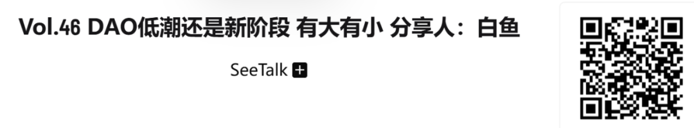

本文出自 SeeDAO联合发起人白鱼在第九届节点共识大会第二天（2024年11月30日）的分享。在节点大会上白鱼分享了一些观察和思考——“DAO 低潮？还是新阶段？有大有小”。
这是一个主题，两个问号，DAO 作为加密世界较为宏大的社会叙事的现状和进展；以及类似于合作社、小型社区组织两个层面进行表述。
为不曲解作者原意，本文使用分享时的第一人称。
以下是分享
▽
如果根据 DeepDAO 的数据，DAO 似乎依然很活跃。但深究下去，DAO 的定义过于宽泛......
DeepDAO 统计的数据显示所有 DAO 的国库累计约有 300 多亿美元，流动性的高达258 亿美元，锁住的也有 47 亿美元；数据还整理了 DAO 内提案数量和参与治理人员的活跃度。
官网：https://deepdao.io/organizations
在数据不断上涨的前提下，为什么我们仍然感觉目前 DAO 相比于 2021 和 2022 年的热火朝天，却显得不那么活跃了？显然，我们需要对数据进行深究。
从国库排名上看，DAO 的定义似乎过于宽泛，目前排在第二名的是 Optimism 的 DAO，里面还统计了 MakerDAO 甚至以太坊基金会的经济数据。就相当于只要使用了多签和多签延伸，无论是 MakerDAO 这样的 DAO 内产品还是项目方本身部分社区金库中的 token，都算作 DAO 的国库数据。

按国库数据，SeeDAO 排在大概 213 名，但我们可以很明显看到一些 NFT上的产品和 BTC 上的 Swap，甚至有些不清楚是不是 DAO。以上表明，只看数据是非常表面且宽泛的，大家对 DAO 的定义大相径庭。
低潮的原因有三点：
01. 更像是社会实验，关注宏大叙事，难以避免时代的映射（Network State、DeSociety）
有几个大家不能避免和否认的例子，比如海外的一些DAO组织，Aragon 宣布从 2017 年开始 ICO，更早的时候是要做一整套链上的智能合约系统，依靠代码预先设置的规定来处理很多分歧，ICO 获得了巨大的成功，之后 Aragon 宣布解散基金会。2022 年还听闻 Aragon 成员信心满满地想要重构整个 DAO 操作系统，后来他们就解散了。还有 BanklessDAO 陷入低潮，核心贡献者基本离去，BanklessDAO 的创始人也在那段时间发表声明，要与 BanklessDAO 作切割。还有海外我们知道的像 Utopia 这样发工资的 DAO tool 转移了方向，以及一些其它的 DAO tool 逐渐沉寂。
无独有偶，华语区 DAO 组织显然也不如 2021 和 2022 年的关注度高，像我们现在使用的一些第三方工具也很难维持和获得收入，没有赛道也无法发 token，致使这些工具缺少生存空间。当时我们可以很明确看到很多热情洋溢的文章，对 DAO 各方面的关注，以及吸引大型企业在想 DAO 怎么样能帮助他们解决一些问题。
再之后是 Nouns DAO，一度让人们感觉好像往前走了一些，SeeDAO 当时也投入了很长的时间，我也在社区内部有推介。我们如果用比较批判的眼光看待 Nouns DAO，虽然有了进步的成果，但仍然认为它还不够好。后来 Nouns DAO 不断地分叉再分叉，相当于在治理陷入了很大的问题，这些都是在行业里有发生过的。
前面也提到，我今天的分享方向是有大有小，当我们往大了看，这个叙事大家会把它拉入Network State, 套入一个大型组织的治理，如同以太坊提出的 Desociety 层面。从这个层面思考，那么它就更像是一个社会实验，仿佛一场社会运动一样的宏大叙事。不脱离这个层面，那么 DAO 的实践也就不可能脱离时代的影响。就像是民粹主义的崛起，以及各个政治层面的影响。另一方面，它也不能避免整个 Crypto 行业对它的影响。所以当你把 DAO 作为一个社会实验，再扩展出来的一些叙事，那么它就必须置身于这个潮流当中。
而最近整个 Crypto 行业，在宏观叙事上自身就面临着很大挑战。我在这里举一个最极端的例子，今年发生了一件让我觉得很讽刺的事情，一些比特币极大主义者的一些想法，觉得需要靠美国大选来作情绪拉盘。而我们都知道比特币白皮书表达的想法，现在的状况是比特币依靠 ETF，得到特朗普的支持，再扩散到美国国会议员的支持，接下来进入主权，甚至是主权储备，然后是一些海湾国家也在挖矿，进一步获得了更多的Mass adoption。
诚然，这有它积极的一面，大家更容易获得比特币。但另一面也显而易见，如果越来越多地关注这一方面，那就跟原先美国政府控制黄金，或者和华尔街传统金融资本的故事毫无分别。那么比特币想要引领的社会实验到底该走向哪里？
我在这里并没有定义他们是好是坏，仅仅是阐明我们现今正在遇到的问题，这是整个行业，尤其是行业从业者需要解决的问题。
02. BTC、ETH 头部公链自身治理离理想情况仍有很远距离
在我看来，DAO 一直是与治理、组织方式紧密相关的。去中心化自治组织，从字面上看，它就肯定是更多倾向于治理的。于是就有了一些人组织在一起，为了一个愿景，去投入资源，再考虑如何分配成果。
其他的链暂且不提，位于头部的比特币和以太坊在自身问题上都深陷泥潭，这不可避免地也会影响到 DAO。尤其是以太坊的治理，近期他们也陷入了巨大的舆论危机。即使代币价格有所上涨，大家也不像开始的时候那么关注它了。我们可以看到以太坊基金会里面一些研究员的文章，像 EF 那样一个臃肿的官僚机构是怎样影响整个以太坊，甚至出现了一些对 Vitalik 个人的拥护和反对声音。
除比特币外，以太坊已经是所有的链、所有的项目协议里做得最好的了，尤其在追求去中心化的层面。有一个鲜明的对比是 Solana，无需讨论就可以直接把它看做是一个公司，如同 Open AI，初始说是非营利性组织，现在已经转变成一个营利性组织，那么它就可以算是一个硅谷公司。Solana 与一个硅谷公司没有太大差别，甚至它自身也宣扬他们的优势在于效率和价格，期望做一个链上的币安。
以太坊可以说是作为 DAO 的发源地，The DAO 事件还引起以太坊分叉，以太坊白皮书就写了 DAO，而 Deep DAO 上的统计数据绝大部分在 EVM 链上。现在以太坊自身的治理陷入困境中，不可避免需要考虑怎么走出这个问题。或许 Vitalik 会写一些文章，提出各种各样的解决方法，背后的 VC、社区项目方、普通成员各有各的想法。其中我观察到一些比较离谱的趋势，每当以太坊出现问题时，不少人会期待 Vitalik 出来力挽狂澜，甚至劝进、去改革 EF 使其更加集中，让以太坊 Great again，其中也会有一些核心贡献者离开。当然以太坊现在已经成为全球金融很重要的一个基础设施，像索尼等一些重要项目，甚至各个交易所，做链都是直接参照 EVM 修改成一条新链，成为以太坊的 layer 2。
但 Layer 2 和 Layer 1 之间的关系现在也是错综复杂的。Layer 2 就像是一个个诸侯，以太坊就像是宗主国“周”，这个比喻我记得在 SeeDAO 也提起。这就导致一个问题，以太坊能否成为一个理想中的“周”，是春秋，还是战国？更进一步，它会如何从这次危机中走出来，是否会变成“秦”？
这些事件的进程都会不可避免地影响整个行业中对治理、对去中心化的思考。它的抉择和做法会吧影响一步步渗透下来，直接被 copy 到 Layer 2，然后再被 copy 到像Maker DAO、Uniswap 一些头部的协议，再到更下面的项目，进而影响到整个生态系统，里面的 DAO 则会受到很大的投射。
BTC 的问题与以太坊不尽相同，第一个问题是过于无为而治。从 BTC 提出至今，几乎没有过多追求，简单化的协议，没有干预的进程，这些不代表没有问题。BTC 现在只有简单的治理，比如存在一些客户端的开发者。他们主要靠几个大的实体公司捐赠，这些人可能和这几个大的实体公司之间有一个类似于旋转门的存在。
第二个问题是 BTC 协议进展过于缓慢，非常难以达成共识。BTC 整个生态的共识是非常分散的，这有好的一面，同时也会带来其它问题。比如说你想去发一个 NFT，但无法明确应该使用哪个协议，存在的流动性也是十分分散的。虽然 BTC 对于发展方向有一些隐含的共识，那些比较 OG 的人部分想法达成了一致，但归根结底，发展方向还是要以用户和市场作根据，这可能会使它走向另外一个方向。
BTC 会因过于无为而导致混乱。任何事情想要有进展，起码需要先讨论后形成提案，说服 Core，即使被说服，开发出来已经是几年以后的事情，做出来后还需要得到矿工的认可，部署到矿池矿场，又几年过去了。由于它是没有任何激励的，只能靠捐赠，事情就会这样进展。
03. 重技术而轻思想，重分配而轻生产，赶时髦追热点而轻视常识与传统
我在近几年 DAO 的实践经验总结了一个明显的趋势，就是大家非常地重视技术，觉得技术可以解决所有问题，对技术盲目乐观，而轻视思想建设，或者说轻视政治哲学和组织哲学上已有的东西。
回过头来看，DAO就是人类历史上的组织形式重走了一遍，从最初形态飞速发展成了无政府的形态。像当时 Constitution DAO，token 发行方都无法确定，到最后，我们才后知后觉，噢，我们还不能是完全无政府的状态。后来开始出现了一些秩序，组织方式进入了代议制，有部分人还是愿意坚持直接民主，要所有人都有投票权。一开始还是凭借协议所有人决定所有事情，到后来撞了效率的南墙，慢慢就开始有了小组制和项目制。然而，公地悲剧的事情仍在重演，公共治理还是会遭遇到包括腐败等所有问题。
从另一个方面来说，大家都非常重视分配而轻视生产，甚至可以说参与 DAO 的人是缺乏生产能力的，也没有太多社会实践的经历。不少 DAO 甚至是一些没有参加过实际工作，没有创业经验的人发起的，在没有经历过市场实践的前提下高呼我们要进入 DAO，拒绝成为工业化的螺丝钉。在SeeDAO 我们自己也经历过，忽略了生产规律，发起让代码更具去中心化的倡议，甚至不能把它称为开源软件生产。结果理想遭遇现实，在实际软件无法生产出来后，迫不得已还是需要专业小组的介入。一开始，大家都认可这个想法很好，然后开始想象做出来后会获得多少收益，分配方案要怎样才能公平，把精力用在了分配上而非生产上。
反思
最后是我自己的一些反思，这个行业有了太多时髦的词，热点也是一个接一个，夹杂着专业技术用语，变成了 DAO 内的“四不像”。发展至今，整个行业都掀起了搞 meme coin、搞链上赌场，这个并非一蹴而就的，是一步步出现的。就像我们当初提出 NFT、DAO 一样。在提起之初，这个叙事是非常美好的，大家对它也有很高的期待和愿景。但实际落地的过程，就变成了发 token 融资，炒作一番过后，只剩一地鸡毛。好像只要在里面的投资/投机有赚到钱就可以了，不需要去在乎是否真正落了地。从 NFT 到 DAO，无一不是这样，导致行业内非常浮躁，轻视传统和常识。传统和常识是我们从投入到生产，再把产品或服务投入市场，得到市场认可形成它的价值，才能有所回报。如果投入和产出的价值长期亏损，自然就会导致破产清算，生产链就结束掉了。
无论 DAO 领域的实践，还是在 Crypto，我个人感觉大家都不去重视这些。因为我们有很多很好很宏大的叙事，好像里面的投机是理所当然的，即使是换汤不换药也是能让人心安理得的。在 DAO 领域，又恰恰聚集了很多有理想的人在实验，在相关问题上就会暴露得更加明显。
接下来我想讲一下工具理性还是价值理性这个问题，大家可以看一下下图：
这张图来源于一个网站，这里边统计了很多 DAO Tooling。从身份到门槛工具，到发工资。你可以发现一个很有意思的地方，这里甚至不用工资这个词，而是用 compensation赔偿，实际逻辑也是做了多少工资，获得多少回报。而这种别扭的表达方式，在 DAO 、整个 Crypto 比比皆是。这里有一些分析工具，做论坛、做 DAO 框架的工具，甚至还有做法律仲裁知识库。到现在，这些工具很多都不活跃了，代码也不再更新，因为运营维持不下去，在 token 无人购买和融资持续消耗的情况下，也就难以为继了。
这就是我想说的当时我们非常重视工具，认可工具的理性，觉得工具可以帮我们拆成一个个模块，分成一个个很小的问题，然后就可以解决 DAO 大的那个理想愿景的问题。而在过程中，没有现金流的收入，也没有商业上的一些基本常识。
这就是我观察到 DAO 陷入低潮的一些显性的点。但我也同时看到了一些积极的地方，这让我相信 DAO 是到了一个新的阶段，让我还愿意去关注它，探索它，而积极的地方往往是从小处萌芽的。
从我的角度看，如果人们不讲那些宏大的叙事，只从小的，比如 DAO 的一个基本精神来说，就是人人平等的概念。大家从一开始本质上是平等的，投入资源合伙，共同做一件事，做成之后再分配收益。这里我只讲那些小的集体，不去讲那些世界性的话题。
比如我自己尝试发起白读书屋，我从来没有把白读当做一个 DAO ，但在我心里发起它的形式类似于合伙。我算是主要的发起人，投入了一些资金，然后也有一些朋友，愿意来投入他们的设计、付出时间，然后有了“合伙”。我们有自己的合伙人会议，要共同决策，还要定期选出主理人。这个书店的投入和运营过程就要面临很多具体的问题，要先选址、装修，每天还有水电等各种费用，运营中还要清洁环境、打扫卫生间等各种问题，这里最积极的地方是给爱读书的年轻人提供了一个空间。书屋从投入至今，起码已经能做到盈亏平衡了。书屋虽小，但当时筹备也花费了极大的心思，要知道书店和书店是可以有所不同的，它有很多种商业模式和运营方式，比如举办一些活动。抛开主理人工资、水电等一些支出，每个月还能盈利几千块钱，好的时候可能有上万，这件事让我觉得非常踏实。
我也看到 NCC 做数字游民大会，去年已经做了一年，今年愈加红火，地点在黄山。我不知道他们是怎么做的，但会议规模很大，也有很多在地。最近我也去了清迈四海，在去年庆祝 SeeDAO 两周年的庄园。今年还在市中心宁曼路租了一个区域。四海租在宁曼路装修过后用来办公，把临街的房子也租了出去。这让我惊讶，等于在泰国有了自己的现金流，做二房东同时还能把以太坊的很多社区都邀请过去。作为一个海外华人社区，老胡的钱启动了这件事，逐渐地事情本身运转了起来，它比山里的庄园更加往前走了一步。这些事情的发生我认为是非常好的，而且在基本的实践上也在认可我们去中心化的理想和公平参与。
在安徽阜阳·南塘合作社。我终于看到中国农村合作社在跟 DAO的理念发生碰撞，很多人在这里面有很多的思考，这是我觉得非常好的地方。这个理念在影响人、在影响一个地方，真正推动着发展。
此外，还有一个我非常关注的对DAO可能有非常大影响的进展，就是AI agent在社区治理和社区生产效率提升上的一些实践。或许每个多元小众社区将来都能用上一些低成本的AI Agent ，甚至出现一些AI和人都是社区平等成员的DAO。这里暂不展开，我是觉得可玩的很多。
总的来说，我描述的都是一些行业内投射出来的问题，但 Decentralize 的观念在Web3社区是深入人心的。好比当年，辛亥革命后，各种事情开始慢慢变形，甚至还发生了皇帝复辟这种荒诞的事情。但那个时代很多人都知道这是个错误，所以复辟的浪潮就被打压下去了。DAO 在上一个阶段，它最起码做到了把 Decentralize 的种子生根发芽。即使它是一个中心化的协议，一个中心化的项目方，它也要装模作样地设立一个社区金库，要有一个 DAO 的外壳。在这个方面，我认为是有在进步的。
我们再来看整个密码朋克运动。从 1985 到1992 再到 2024 年，美国政府释放阿桑奇，然后比特币成为大选的一个关键议题。比特币已经影响到全球，甚至加入到了全球金融资本流动中，不管怎样，你个人都可以通过自托管钱包去持有这个资产，这确实是往前走了一大步。
比特币接下来会怎么走？整个密码朋克运动又怎么走？我认为这些问题都会影响 DAO 的进展。整体来说，关于 DAO 的实践，DAO 要走向哪里，我对这个仍然是非常热忱的。只是我们现在处于一个新的历史时期，我们需要更加具体的实践。我们这些最早参与的一批人，也要走向更加成熟，我也在一直想该如何往下走。
总结
在这里想做一个简单的总结，最高的理想作为社会实验宏大的方面，DAO 陷入了一个阶段性的低潮。核心要关注的是这一次以太坊的危机是如何度过的，它的治理又会变成一种什么样的形式？Network State 的叙事和 Desociety 在合流，合流后又会变成什么样呢？我们也有同学去 Network State，有各种各样的声音，它毕竟在把 Crypto 往更大的方向引。我认为这个东西并不以价格表现衡量，而是以在实际发展程度来看。作为一个小组织的一种方法，能把一群人组织成一个小的社区，在这方面它的进展是很大的。我们可以在新加坡、成都等地去跟一个在美国、在非洲的人一起协作，我们建立一个多签工具，管理着共同的资产，让所有的资产在链上很清晰地呈现出来。最关键一点是，如果一个小型组织，就不用去考虑很多系统性的事情，因为一个小组织就合伙的几个人，以 DAO 的形式很容易关注到 Web3，从而更容易接受到 Crypto 溢价。
如果我们把目标缩小在 Crypto 申请一些 Grants，做一些事情，对一些小组形式来说我认为是有很大可行性、也是正面的。举一个简单的例子，当时白读书屋的启动资金，剩下的钱购买了比特币，后来比特币涨价，白读书屋就有了很多资金；SeeDAO 也一样，至今国库有钱，核心正是当初把国库资产换成比特币。所以对一些小组织来说，不关心那些系统性的问题是可以有很大进展的，也还能在这里面做更多更多的事情。
如果我们能够让投身DAO社会实验的具体的人们和一个个组织慢慢获得正反馈，生产和社区建设匹配上，那整个社会的宏大叙事才是有源之水。
以上是我的一些思考和分享，谢谢大家!
相关播客：

节点大会系列：
节点大会精华 | 比特币：再论国家的消逝，网络城邦，多元主义

整理：小白
排版：T1NG
审核：文倩